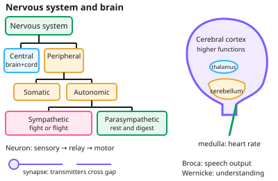

GCSE Psychology · Topic 5
Brain and psychological problems
Brain and psychological problems explores how the brain works, and the causes and treatments of mental health problems.
We will study the nervous system, neurons, brain structures and localisation, neuroimaging, and famous case studies.
Then we look at mental health, depression, addiction, phobias and O C D.
- 7 subtopics
- 269 questions
- Free: 5.1 notes and 10 questions
In this topic
- 5.1Brain and neuropsychologyFree below · 24 questions
- 5.2Psychological problemsOpen in Full Marks · 21 questions
- 5.3Neuroimaging and neuropsychological case studies: CT, MRI, fMRI, PET, EEG, Phineas Gage and HMOpen in Full Marks · 57 questions
- 5.4Depression: symptoms, causes and treatmentsOpen in Full Marks · 43 questions
- 5.5Addiction: explanations, risk factors and treatmentsOpen in Full Marks · 40 questions
- 5.6Phobias and OCD: symptoms, explanations and treatmentsOpen in Full Marks · 54 questions
- 5.7Schizophrenia: symptoms, explanations and treatmentsOpen in Full Marks · 30 questions
5.1 · Free notes
Brain and neuropsychology

Key points
- The nervous system divides into central (brain and spinal cord) and peripheral (somatic and autonomic); the autonomic system has sympathetic (fight or flight) and parasympathetic (rest and digest) branches.
- Neurons (sensory, relay, motor) transmit electrical impulses; at the synapse, neurotransmitters diffuse across the gap.
- Brain structures: cerebral cortex (higher functions), cerebellum (balance and coordination), medulla (unconscious functions such as heart rate), thalamus and hypothalamus.
- Localisation of function: motor, somatosensory, visual, auditory and language areas (Broca's area for speech production, Wernicke's area for understanding), with language usually in the left hemisphere.
- Brain scanning techniques include CT, PET and fMRI, which vary in detail, cost and whether they show activity or structure.
- Neuropsychology studies effects of damage, for example in cases of aphasia; case studies give detail but are hard to generalise.
- The James–Lange theory of emotion says that physical arousal comes first, and we then interpret it as an emotion: we see a bear, our heart races and we run, and then we feel afraid. Event → arousal → interpretation → emotion.
- A criticism is that people with spinal injuries, who feel less bodily arousal, still experience emotions, and the same arousal (such as a racing heart) can occur with different emotions.
In more detail
- Brain areas: the frontal lobe controls movement and planning; the parietal lobe processes touch; the occipital lobe, vision; and the temporal lobe, hearing and memory.
- Language areas: Broca's area (left frontal lobe) produces speech; Wernicke's area (left temporal lobe) understands language.
- Penfield: stimulated the cortex of epilepsy patients during surgery, triggering sensations, movements and memories.
- Hebb's theory: "neurons that fire together, wire together", so learning strengthens connections.
- Synapses: neurotransmitters cross the gap between neurons and can be excitatory or inhibitory.
Practice
Brain and neuropsychology: 10 questions
Pick an answer to check it, or open the answer for the explanation.
1. Which part of the brain controls balance and coordination?
- Cerebral cortex
- Cerebellum
- Medulla
- Hypothalamus
Show answer
B: Cerebellum. Damage causes problems with movement and balance.
2. Which branch of the autonomic nervous system triggers fight or flight?
- Somatic
- Sympathetic
- Parasympathetic
- Central
Show answer
B: Sympathetic. The parasympathetic branch returns the body to rest.
3. Damage to Broca's area typically affects:
- Understanding speech
- Producing fluent speech
- Vision
- Balance
Show answer
B: Producing fluent speech. Wernicke's area is more associated with comprehension.
4. Which scanning technique shows brain activity in detail without radiation?
- CT scan
- fMRI
- X-ray
- EEG only
Show answer
B: fMRI. fMRI tracks blood flow to active areas.
5. What happens at a synapse?
- An electrical impulse jumps directly
- Neurotransmitters diffuse across the gap to the next neuron
- Neurons fuse together
- The impulse stops permanently
Show answer
B: Neurotransmitters diffuse across the gap to the next neuron. Chemical transmission carries the signal between neurons.
6. What is the role of the cerebellum?
- Language production
- Balance and coordination of movement
- Regulating heart rate
- Long-term memory storage
Show answer
B: Balance and coordination of movement. Damage to it typically causes problems with coordinated movement.
7. Which neurotransmitter is most associated with mood and depression?
- Serotonin
- Insulin
- Adrenaline
- Glucose
Show answer
A: Serotonin. Many antidepressants work by increasing serotonin availability.
8. Which two parts make up the central nervous system?
- Somatic and autonomic systems
- Brain and sensory neurons
- Brain and spinal cord
- Spinal cord and somatic system
Show answer
C: Brain and spinal cord. The CNS is the brain and spinal cord. The peripheral nervous system (somatic and autonomic) connects the CNS to the rest of the body.
9. Which type of neuron carries impulses from the central nervous system to a muscle?
- Receptor neuron
- Motor neuron
- Relay neuron
- Sensory neuron
Show answer
B: Motor neuron. Motor neurons carry impulses from the CNS to effectors such as muscles and glands. Sensory neurons carry impulses towards the CNS, and relay neurons connect neurons within it.
10. A person's heart rate and breathing stay steady without conscious thought. Which brain structure mainly controls this?
- Thalamus
- Cerebellum
- Cerebral cortex
- Medulla
Show answer
D: Medulla. The medulla controls unconscious functions such as heart rate and breathing. The cerebellum handles balance and coordination, and the cortex handles higher functions.
Keep going in Full Marks
Full Marks has 24 questions on Brain and neuropsychology (14 more than here), set out in practice levels. You also get notes and 3D models for all 7 subtopics of Brain and psychological problems, plus games, timed exams and past papers.
On your exam board
- AQATopic 7: Brain and neuropsychology, Topic 8: Psychological problems
- OCRTopic 3: Psychological problems
- EdexcelTopic 3: Psychological problems, Topic 4: The brain and neuropsychology
Not in the Cambridge specification.